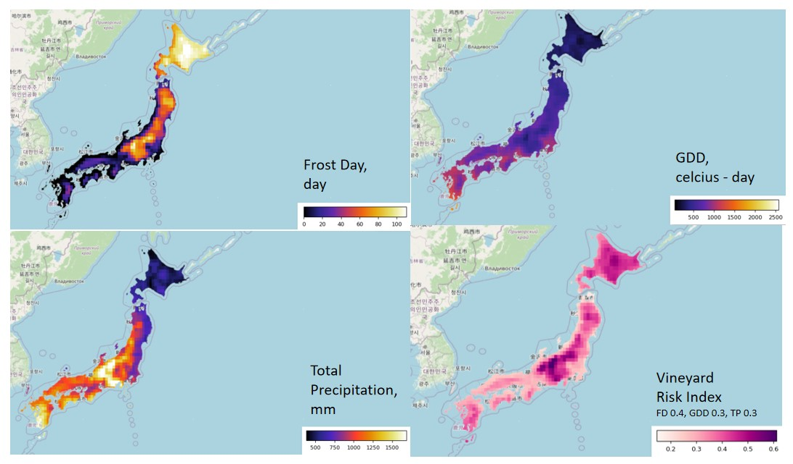

What are the problem faced by vineyard managers today?
They are dealing with regular late spring frost, summer rain and temperature change.
What would frost, rain and temperature change do to the vines in vineyard?
These environment factors affect vines growth and quality as follows:
- 1) Late Spring Frost damages buds and young shoots, which are critical for the vine's growth cycle and grape yield. Severe frost can destroy the primary buds, reducing the potential crop.
- 2) Rain disrupts flowering and pollination, leading to poor fruit set (also called "shatter" or "coulure"). Excessive rain increases humidity, which encourages the development of fungal diseases such as downy mildew, powdery mildew, and botrytis.
- 3) Temperature fluctuations delay or accelerate phenological stages such as bud break, flowering, veraison (color change), and ripening. Sudden cold snaps or heatwaves can stress the vines, affecting their development.
How much can we monitor these environment factors?
Satellite data can effectively monitor frost, GDD (Growing Degree Days), and total precipitation, enabling vineyard managers to track and mitigate the impacts of environmental factors.
Satellite data for frost days, GDD, and total precipitation helps vineyard managers by providing real-time insights to prevent frost damage, optimize vine growth stages, manage water resources efficiently, and mitigate risks of disease or poor grape quality due to adverse weather conditions.
How to code the risk map as shown?
This code assesses vineyard risk by calculating and normalizing three key environmental factors: frost days, growing degree days (GDD), and total precipitation. Each factor is computed using ERA5 daily reanalysis data for a specified region and time period.
Frost Days: Days with a minimum air temperature below 0°C are identified, and their total count is calculated. The frost days are normalized by dividing each pixel value by the maximum frost days in the region, resulting in a scale from 0 to 1.
GDD: The average daily temperature (converted from Kelvin to Celsius) is used to compute GDD with a base temperature of 10°C. Positive differences between daily mean temperature and the base are summed over the year. GDD values are normalized similarly.
Precipitation: Total precipitation is summed across all days within the time period. The values are normalized to ensure comparability.
The normalized layers are combined into a risk map using weighted contributions: frost days (40%), GDD (30%), and precipitation (30%). The final risk map highlights areas with higher environmental risks for vineyards, aiding decision-making for vineyard site selection and management. Layers are visualized using geemap for inspection and analysis.